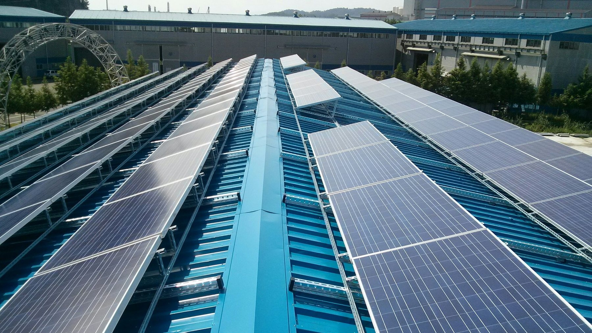

Net metering in Korea: the Article 18 rules and what changes on the bill
Who qualifies, how exported kWh are credited, the SMP settlement for net export months, KEPCO's worked bill, the application steps and how to size a roof for it.
The short answer
Net metering in Korea is available to a customer whose generator sits at the same premises as the load, up to 1,000 kW for solar and 10 kW for other renewables. Exported kWh are valued at the same rate as imported kWh and are subtracted from the energy charge. In a month with net export, the customer chooses between a cash settlement at the weighted average system marginal price and a carry over to the next month.
Korean net metering is simple to state and easy to misjudge, because the credit applies to one line of the bill, not to the whole bill. The rules sit in Article 18 of the Guideline on the Trading of Power from Small Scale New and Renewable Energy Facilities (소규모 신ㆍ재생에너지 발전전력 등의 거래에 관한 지침), issued by the Ministry of Climate, Energy and Environment as Notice No. 2025-61 and in force since 24 December 2025, and in KEPCO's published net metering guidance. This note explains what the rules say, how the bill changes, what the application takes and how to size a rooftop for it.
Who qualifies and what is credited
- The generator must be installed at the same premises as the point of consumption. Remote or virtual netting is not part of this scheme.
- Solar up to 1,000 kW qualifies; other renewable technologies qualify up to 10 kW (Article 18(1)).
- The premises use their own generation first. Only the surplus flows to KEPCO.
- Exported energy is deemed to have the same unit price as imported energy (Article 18(2)). One kWh exported is one kWh not bought.
- In a month where exports exceed imports, the difference is either paid in cash or carried to the next month, at the customer's choice (Article 18(5)). The cash rate is the weighted average system marginal price (SMP) for the period, which is well below the retail rate.
- How many months a credit can be carried is set by KEPCO's internal processing rules. We have not seen that text, so we do not quote a limit.
What changes on the bill
KEPCO's guidance is precise about which line is netted. Only the energy charge is billed on the netted quantity. The demand charge and VAT are not.
| Bill line | Basis |
|---|---|
| Demand charge | Residential: the tier of the pre netting import. All other classes: contract demand |
| Energy charge | Netted quantity (imported kWh minus exported kWh) |
| VAT | Pre netting import (10% of demand charge plus energy charge on the gross import) |
KEPCO's own example takes a month with 250 kWh imported and 100 kWh exported, for a residential customer and for a general customer with 5 kW of contract demand.
| Line | Residential customer | General customer, 5 kW contract |
|---|---|---|
| Demand charge | 1,600 KRW (tier 2 by the 250 kWh pre netting import) | 30,800 KRW (6,160 × 5 kW) |
| Energy charge | 18,000 KRW (150 kWh netted × 120.0) | 19,860 KRW (150 kWh netted × 132.40, summer) |
| VAT | 3,633 KRW ((1,600 + 34,730) × 10%, pre netting) | 6,390 KRW ((30,800 + 33,100) × 10%, pre netting) |
Without net metering the residential energy charge on 250 kWh would have been 34,730 KRW; netted to 150 kWh it is 18,000 KRW, a saving of 16,730 KRW on that line. The demand charge stays at the 250 kWh tier, and VAT is calculated on the gross import, so the amount billed and the supply value on the tax invoice do not match. The example excludes the climate charge, the fuel cost adjustment and the power industry fund.
A VAT registered business must issue a sales tax invoice to KEPCO for the surplus KEPCO buys, with the supply value equal to the monthly surplus kWh times the rate of its tariff class. Households and non business customers do not.

The application, step by step
- File the net metering application with a site plan of the generator, the equipment test reports and the interior wiring drawings, by post, fax, visit or through KEPCO ON.
- KEPCO's technical review, then payment of the customer's metering cost (and KEPCO connection work where needed).
- Pre use check or inspection by the Korea Electrical Safety Corporation.
- Parallel operation agreement and net metering contract, KEPCO meter installation, start of operation.
KEPCO's stated lead time is 13 days for low voltage and 28 days for high voltage from the application, excluding the connection work and the safety inspection, and the desired start date may be set as early as 7 days after the application.
Sizing a rooftop for net metering
The quantity net metering rewards is what the premises consume plus what they export, up to the premises' own annual consumption. Generation above the annual consumption only earns the SMP settlement or a carry over, so it does not reduce the bill further. The sizing order is therefore: find the capacity the roof can take, then compare the annual yield with a year of bills, and stop at the smaller of the two unless the owner specifically wants to sell the surplus.
For a quick first pass we publish a free net metering calculator on the Korean site (tool-net-metering, Korean), which uses the KEPCO rate table by hour and splits generation into self consumed and exported energy. For a real project we use the actual twelve months of bills and, where the customer has one, the 15 minute meter data.
What we provide
- A capacity recommendation that matches the roof and the annual consumption, with the self consumed and exported shares.
- The bill before and after, line by line, including the VAT and tax invoice treatment for business customers.
- The KEPCO application packet, the safety inspection and the interconnection, as one scope.
If you are planning a project in Korea and want this check done on your site, email the drawings or the parcel list to info@ecokkorea.co.kr. We reply with the scope and schedule first.
Sources: Guideline on the Trading of Power from Small Scale New and Renewable Energy Facilities, Article 18 (Ministry of Climate, Energy and Environment Notice No. 2025-61, in force 24 December 2025); KEPCO ON guidance on the net metering scheme, checked 11 November 2026, including the worked example; KEPCO tariff table for the rates in the example. Rates and processing rules change when KEPCO revises them, so confirm with KEPCO (dial 123 in Korea) before contracting.
More insights
- Korean solar permitting setback rules explained
- How we size ESS for peak shaving with 15 minute data
- PVsyst vs Solar Pro cross-check on a 619 kWp roof
- Agrivoltaic structure design basics
- Electrical BOQ and quantity take-off workflow
- Korea industrial electricity tariff 2026: rates, demand charges and a worked bill
- Solar permitting in Korea: the seven steps, statutory periods and a real timeline
- Korea's agrivoltaics act: who can build, where, for how long, and the draft design rules
- Peak shaving ESS payback in Korea: a worked example with 2026 tariffs